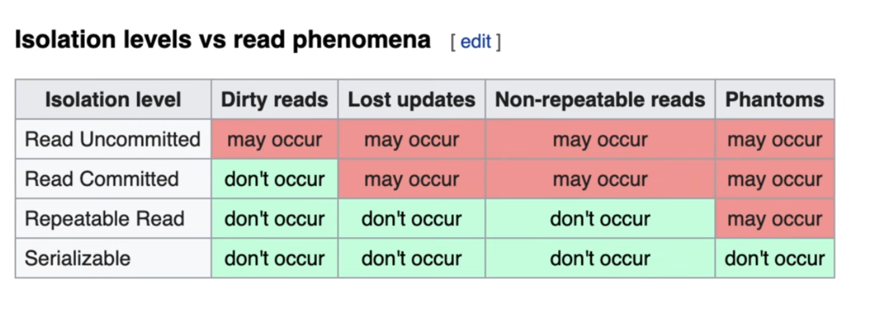

Transactions
A transaction is a collection of queries treated as one unit of work — e.g. an account deposit: read the balance, add the amount, write it back. Either all of it happens or none of it does.
ACID = atomicity, consistency, isolation, durability.
Atomicity
All queries in the transaction must succeed; if one fails, rollback everything. Partial work is never visible after a crash — recovery undoes it.
Isolation
The question isolation answers: can my in-flight transaction see changes made by other transactions? The answer is tunable, via isolation levels, and the ways it can go wrong are the read phenomena:
- Dirty read — reading another transaction's uncommitted change (it may roll back).
- Non-repeatable read — reading the same row twice gives different values, because someone committed in between.
- Phantom read — re-running the same predicate query returns new rows that appeared in between.
- Lost update — two transactions read the same value, both write; one write silently overwrites the other.
The levels, weakest to strongest:
- read uncommitted
- read committed
- repeatable read
- serializable

The key idea is that Repeatable Read protects rows you've already read, but not necessarily the set of rows matching a predicate — that's why phantoms remain possible.
Repeatable read is enough if it was implemented with versioning. The SQL standard's anomaly table is old — it assumed lock-based implementations. In databases using MVCC, such as PostgreSQL and MySQL, the behavior differs: PostgreSQL's REPEATABLE READ actually uses snapshot isolation, which prevents classic phantoms too (but not write skew — see the MVCC notes).
Consistency
Two different meanings, both matter:
Consistency in data — the current data obeys the rules:
- defined by the user (e.g. CHECK constraints, business rules)
- referential integrity, i.e. foreign keys
- enforced as a consequence of atomicity + isolation — atomicity + isolation → consistency
Consistency in reads — does a read see the latest committed write? Both SQL and NoSQL databases suffer here the moment you replicate: if you have more than one server, a read after an update won't necessarily reflect that update. NoSQL systems typically only give eventual consistency.
Scaling an RDBMS is hard; systems get better scalability by giving up read consistency.
Durability
Committed transactions must be persisted in durable, non-volatile storage — an OS crash or power loss must not lose a commit. This is what write-ahead logging plus fsync buys (see the WAL notes). Redis, by default, is not durable — an in-memory store with periodic snapshots can lose acknowledged writes.
Interview one-liners
- Atomicity = all-or-nothing. Isolation = as-if-alone. Both together give you data consistency; durability makes it survive a crash.
- "Which anomaly does each isolation level allow?" — walk the table above, then add: in practice check the engine, because MVCC engines beat the standard's table.
- Durability is a spectrum: fsync-per-commit (Postgres default) → group commit → async replication → Redis snapshots.